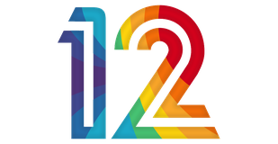

ערוץ הטלוויזיה המוביל בישראל

המנוע מאזין לשידור, מתמלל, מתרגם לעברית ומקריא בקול עברי תוך הנמכת הסאונד המקורי – עם כתוביות.
מפתח חינמי: aistudio.google.com/apikey • המפתח נשמר רק במכשיר הזה.
המפתח נשמר רק במכשיר הזה. עם מפתח OpenAI אפשר לבחור גם בקול הדיבוב של OpenAI.
רץ במחשב שלך (WebGPU אם קיים). מתאים למחשב/טאבלט חזק; בטלוויזיה עדיף Gemini.
כל הקבצים בעמוד ה-Releases של הפרויקט ב-GitHub.
האם ברצונך לצאת או להמשיך לצפות?